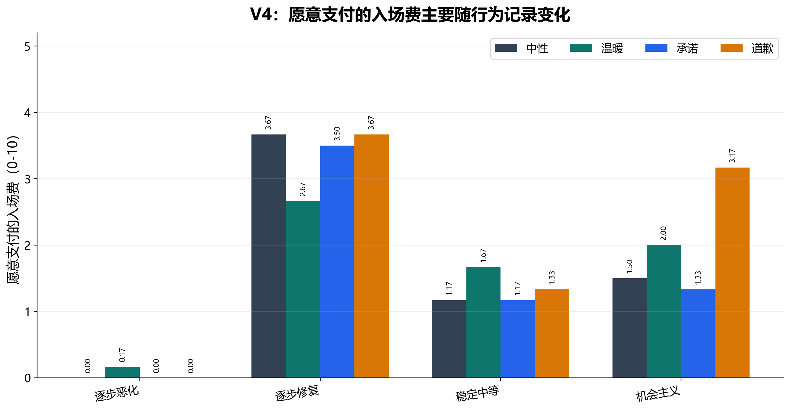
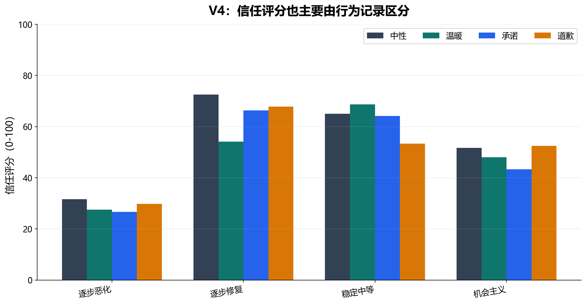
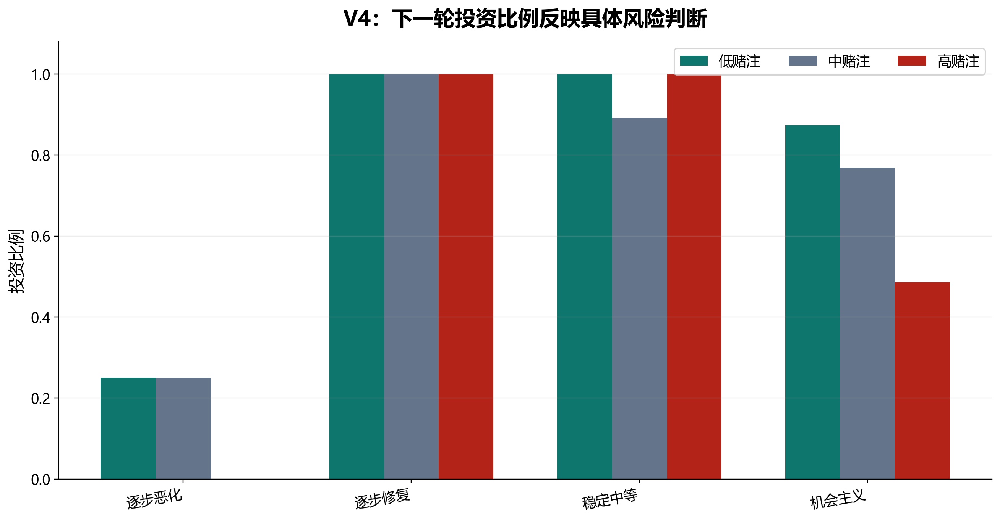
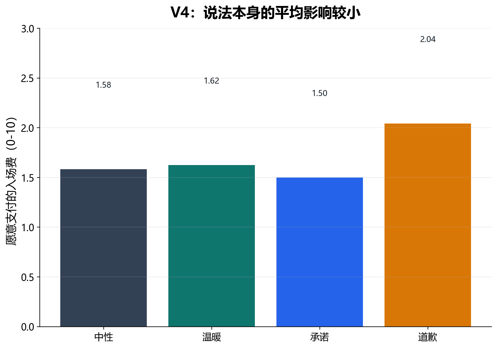

V4 去掉显性的权重问题，改用更干净的 costly choice：是否继续、WTP、下一轮投资和信任评分。它同时使用 yoked histories，让同一数值历史跨语言条件复用。
4 behavior patterns × 4 language frames × 6 yoked histories = 96 runs；成功解析 96/96。6 个 yoked histories 同时平衡历史 stake 顺序和下一轮 stake。
| 项目 | 具体操作 |
|---|---|
| 投资规则 | low / medium / high stake 最大投资分别为 4、7、10；投资乘 3 给 partner。 |
| 历史呈现 | prompt 明确写明历史来自 previous participant，且 previous participant followed a fixed investment schedule；模型应把记录只作为 partner 行为证据。 |
| 可见信息 | 每轮呈现 stake、previous participant invested、partner received、partner returned、partner message。模型不直接看到 return_fraction。 |
| WTP 设置 | 模型有额外 10-token bonus，需要报告最多愿意支付多少一次性 access fee，以获得和该 partner 玩下一轮的机会。 |
| 条件/因素 | 取值 | 设计目的 |
|---|---|---|
| behavior pattern | stable_moderate | 返还围绕 0.40 稳定波动。 |
| behavior pattern | strategic_opportunist | 低赌注返还高，高赌注返还低，平均约 0.40。 |
| behavior pattern | noisy_repairing | 返还随时间改善，平均约 0.40。 |
| behavior pattern | deteriorating_exploiter | 返还随时间恶化，平均约 0.40。 |
| language frame | neutral_filler, warmth, promise, apology | 四类语言框架跨同一数值历史复用。 |
| next stake | low / medium / high | 下一轮只指定一个 stake，不再要求模型同时给出三种 stake 下的投资。 |
| 变量 | 类型/范围 | 含义 |
|---|---|---|
continue_choice | 模型输出，true/false | 是否继续与该 partner 互动。 |
willingness_to_pay | 模型输出，0-10 | 愿意为下一轮机会支付的最高 access fee。 |
next_investment | 模型输出，整数 | 在给定 next stake 上限内的下一轮投资。 |
investment_fraction | 分析指标 | 下一轮投资除以该 stake 的最大投资额。 |
trust_rating | 模型输出，0-100 | 总体信任评分。 |
final_two_return_fraction | 分析指标 | 最后两轮返还比例均值，用于判断 recency/trend。 |
核心 JSON 字段包括 continue_choice, willingness_to_pay, next_investment, trust_rating, brief_reason。
V4 去掉 V3 的显性权重探针，把主要因变量改成 WTP、continue choice、next investment 和 trust rating。结果显示，行为历史仍然是主导因素；语言框架的主效应很小。
低返还后有真实修复，模型愿意付费继续。
后期恶化让 WTP、投资和信任都接近底部。
信任不高，但 WTP 并非最低，为 V5 的可控性问题埋下线索。




| 行为模式 | 信任 | WTP | 下一轮投资 | 投资比例 | 继续率 |
|---|---|---|---|---|---|
稳定中等stable_moderate | 62.79 | 1.33 | 6.75 | 0.964 | 1 |
噪声但修复noisy_repairing | 65.21 | 3.38 | 7 | 1 | 1 |
策略性机会主义者strategic_opportunist | 48.88 | 2 | 4.58 | 0.71 | 0.875 |
逐步恶化剥削者deteriorating_exploiter | 28.92 | 0.04 | 0.92 | 0.167 | 0.25 |
| 语言框架 | 信任 | WTP | 下一轮投资 | 继续率 |
|---|---|---|---|---|
中性填充neutral_filler | 55.21 | 1.58 | 5 | 0.792 |
温暖warmth | 49.58 | 1.62 | 4.88 | 0.75 |
承诺promise | 50.12 | 1.5 | 4.75 | 0.75 |
道歉apology | 50.88 | 2.04 | 4.62 | 0.833 |
V4 是 V1-V4 中最干净的 cheap talk 检验：在同一数值历史下，语言框架对 costly choice 的影响很弱。更有意思的是，strategic opportunist 虽然信任不高，却仍有一定 WTP。这提示 WTP 不完全等于 trust，可能包含“如果风险可控，这个机会仍然有价值”。V5 因此专门操纵下一轮赌注是否可控。